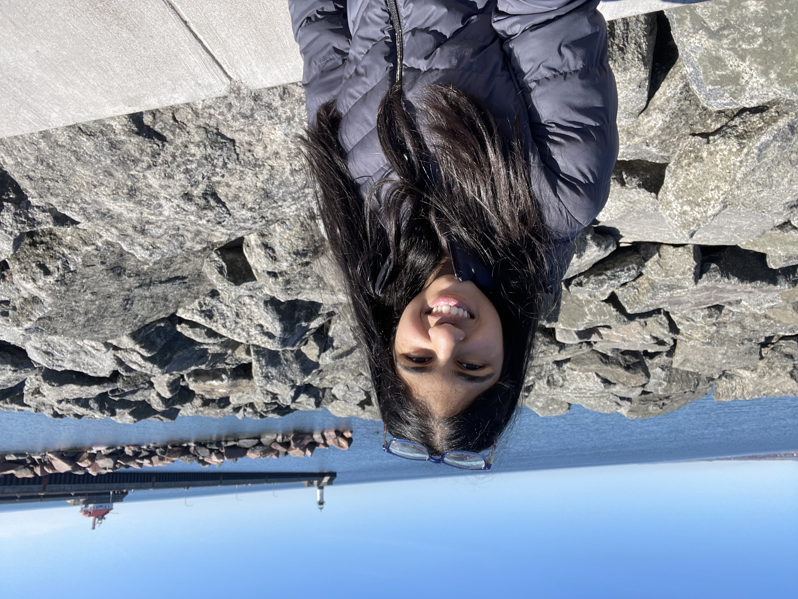
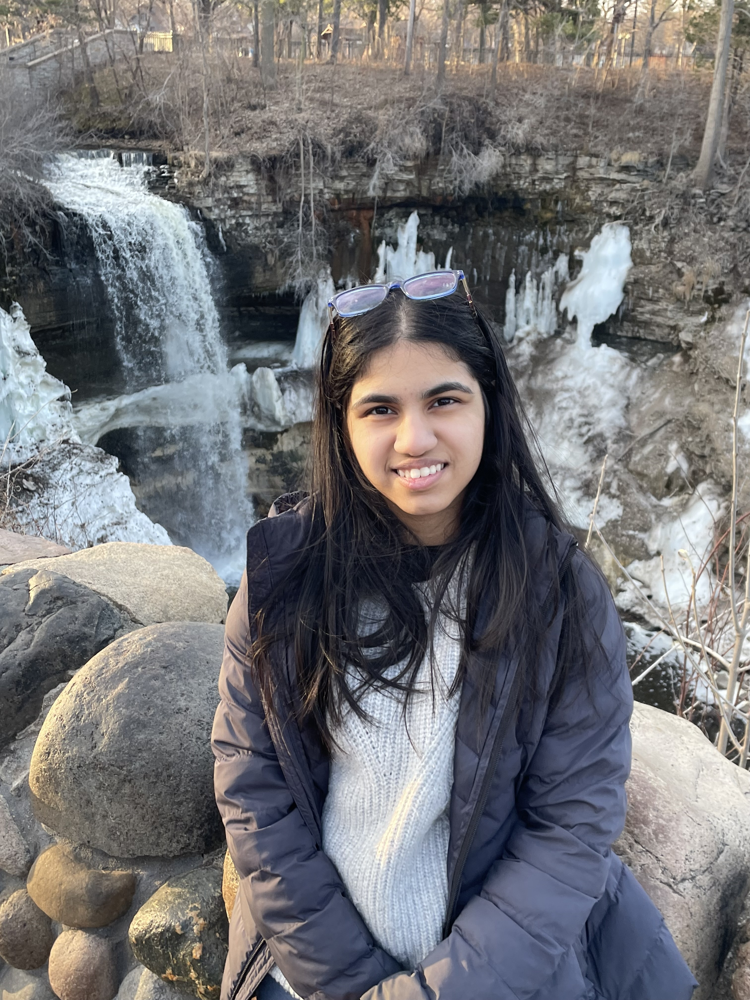

Hello, World!
A Computer Science student at the University of Cincinnati | Class of 2031
I may be a Computer Science student at the University of Cincinnati, but my true passion is for art, design, and creative expression! While I enjoy the technical side of computer science, what initially drew me to it was the ability to create something from an idea. I have always enjoyed making things, whether through programming, visual design, or other creative projects, and I am interested in exploring where these interests intersect.
Through UHP and UC, I hope to explore the relationship between technology and artistic disciplines, particularly through areas such as design, user experience, interactive media, and creative technology. I am interested in learning from people outside of computer science and discovering ways that different disciplines can inform one another.
My goal is to become a more thoughtful creator, not just an impressive programmer or engineer. Throughout my time at UC and UHP, I want to develop projects that combine technical problem-solving with creativity, pursue opportunities that challenge me to work across disciplines, and better understand the kind of work I want to create in the future.
